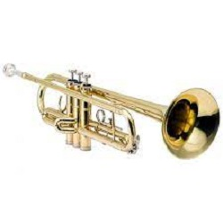
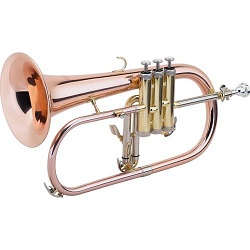
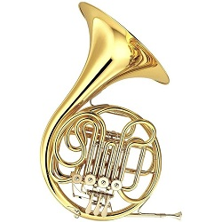
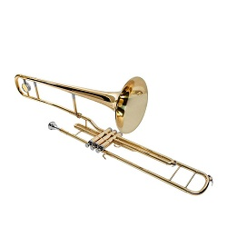
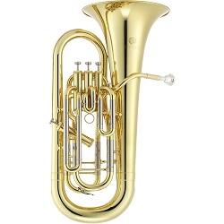
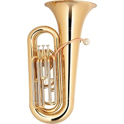
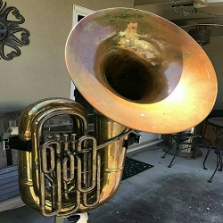
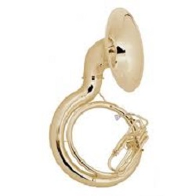
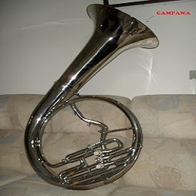

O que diferencia os instrumentos de metal dos instrumentos de madeira é a forma de produzir som. Enquanto os de madeira possuem uma palheta que vibra e produz o som, os de metal fazer barulho através da vibração dos lábios. A família dos metais possui modelos com diversas alturas diferentes, o som deles é mais suave e ele são encontrados atrás dos instrumentos de madeira das orquestras, pois seu som acaba sendo maior do que os outros instrumentos e eles podem "tampar" os outros. Veja mais sobre alguns deles a seguir!
Os instrumentos de altura aguda são aqueles que possuem o som mais "fino". Eles são menores e assim, seu bocal é menor. A digitação dos instrumentos de pistos(metais) é praticamente igual para todos os instrumentos da família.
Os instrumentos de altura "mediana" são aqueles que estão entre o grave e o agudo. Alguns se parecem com os instrumentos agudos, porém são maiores. Eles possuem bocais mais largos, peso maior e a digitação não muda tanto.
Os baixos são aqueles que possuem um som mais grave, eles são os maiores da família e seu formato pode ser parecido com alguns da família, ou podem ser muito diferente dos demais. Os bocais destes são mais largos.
Os trompetes são instrumentos de metal que possuem, na maioria das vezes, 3 pistos. O bocal do trompete é pequeno, tendo que forçar os lábios quase fechados para poder produzir e manter o som nele. Seu som se encontra na região aguda, ou seja, seu som é "fino". O instrumento possui uma estrutura composta por pequenos tubos com curvas, uma válvula para retirar a "água", o bocal e encaixe do bocal. O trompete é bastante utilizado em bandas marciais, jazz ou música clássica.
As trompas são instrumentos musicais que possuem um timbre um pouco mais grave do que o trompete. A trompa é um instrumento de metal curvado várias vezes sobre si mesmo, e possui um bocal numa de suas extremidades e uma campana na outra extremidade. Ela possui três, quatro ou até cinco rotores. Sua forma de tocar é um tanto peculiar, pois para conseguir controlar a afinação, o trompista tocar com a mão esquerda nos pistos e a mão direita dentro da campana, isto também o ajuda a segurar o instrumento. A trompa possui um timbre rico e a mão que fica dentro da campana ajuda a conseguir a variedade de sons.
O Flugelhorn é um instrumento muito semelhante ao trompete, porém ele é mais largo e sua campana é mais ampla. Seu som é suave e mais aveludado do que o do trompete. No estilo musical "Jazz", vários artistas que usavam o trompete mudavam para o Flugel. Originalmente, o instrumento foi feito por militares para comandar alas de infantaria e cavalaria, com uma certa semelhança a corneta.
O trombone é um instrumento que está na região mediana, ou seja, entre o grave e o agudo. O trombone é uma espécie de trompete, porém ele é mais longo e mais grave, mas não mais grave que a tuba. O trombone pode ser curto ou longo, seu bocal é bem mais aberto que o bocal do trompete e o trombone pode ter pistos ou ser tocado através do deslizar de uma "vara". Para produzir as diferentes notas no trombone de vara, o trombonista estica o braço, tendo seis posições diferentes além do tubo totalmente fechado, que totaliza sete posições. Já o trombone de pisto possui três pistos, cada um com um tubo de tamanho variado, quando apertado o pisto, o ar passa pelo tubo e a vibração muda a altura da nota.
O Euphonium é um instrumento que, assim como o trombone, se encontra entre o grave e o agudo. O som do euphonium é mais suave, este já possui um formato diferente do trompete, tendo em vista que o trompete é segurado com a campana virada pra frente e o euphonium possui uma campana direcionada para cima. Assim como os outros, o euphonium possui de três a quatro pistos, o quarto pisto é um recurso utilizado para alcançar as notas do baixo e contra-baixo. O bocal do euphonium pode ser compartilhado com um trombone dependendo da largura do calibre. Assim como os demais, o euphonium possui pistos com tubos( alguns destes tubos possui uma pequena válvula para retirar a "água"), sua campana é maior que a do trompete, flugel e trombone e seu corpo é um pouco mais robusto.
A Tuba, junto com o Sousafone, é o instrumento mais grave da família. Estes são os maiores e mais robustos entre os metais. A tuba possui um formato semelhante ao euphonium, só que algumas possui mais curvas, a campana da tuba é muito mais larga do que a do restante, às vezes, perdendo apenas para o Sousafone. As tubas são dividas em diferentes tamanhos sendo eles a tuba 3/4, esta é mais compacta e seu som acaba sendo mais "fraco", a tuba 4/4, seu som é "maior" do que a 3/4, a tuba 5/4 possui um som mais forte e volumoso e a tuba 6/4, esta é já oferece suporte para as formações grandes, assim como a 5/4. O Sousafone é um instrumento grave, seu formato é circular, tendo a campana reta ou em formato de "S". Sua facilidade para tocar acaba fazendo com que ele seja bastante utilizado em bandas.
Trompete
Fluglehorn
Trompa
Trombone
Euphonium
Tuba campana reta
Tuba campana curva
Sousafone campana curva
Sousafone campana reta
